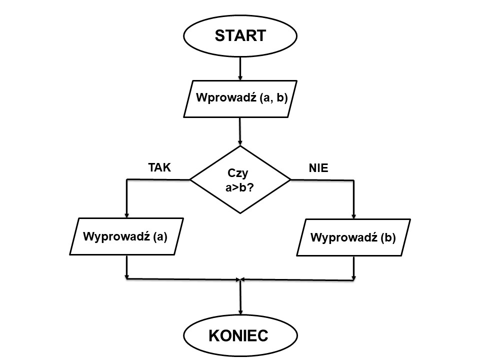

Schemat blokowy – narzędzie służące do przedstawienia kolejnych czynności w projektowanym algorytmie. Jest to diagram, na którym procedura, system lub program komputerowy są reprezentowane przez opisane figury geometryczne połączone strzałkami (niekiedy tylko liniami) zgodnie z kolejnością wykonywania czynności wynikających z przyjętego algorytmu rozwiązania zadania.
Schemat blokowy powinien zapewniać
- elastyczność zapisów
- możliwość zapisu z użyciem składu wybranego języka programowania
- łatwą kontrolę poprawności algorytmu.
Schematy blokowe pozwalają na prostą zamianę instrukcji na instrukcje programu komputerowego.
Elementy budowy
- strzałka – wskazuje kierunek przepływu danych lub kolejność wykonywania
- koło - kończy lub rozpoczyna program
- równoległobok - źródło wprowadzania i wyprowadzania zmiennych
- kwadrat - zawiera obliczenia lub tworzy zmienną
- romb - roztrzyga postawiony warunek
Przykładowy schemat blokowy
